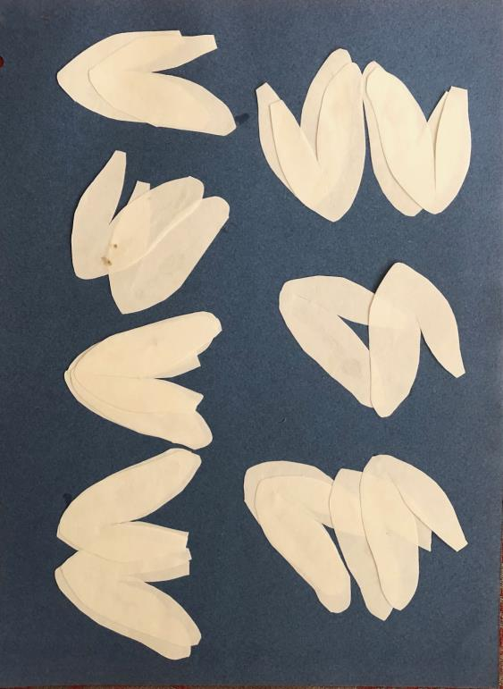
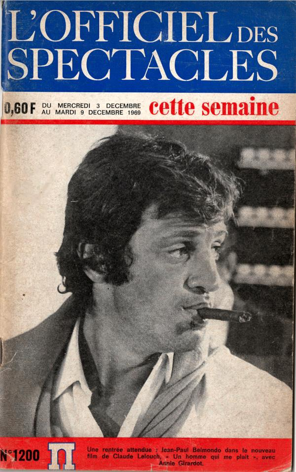
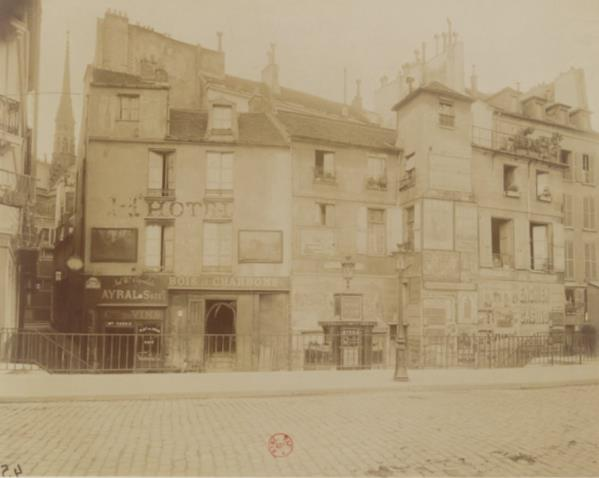
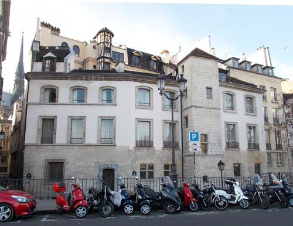
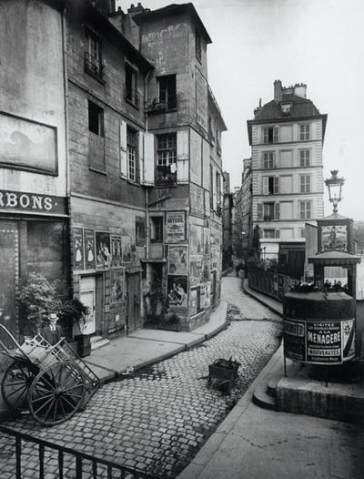
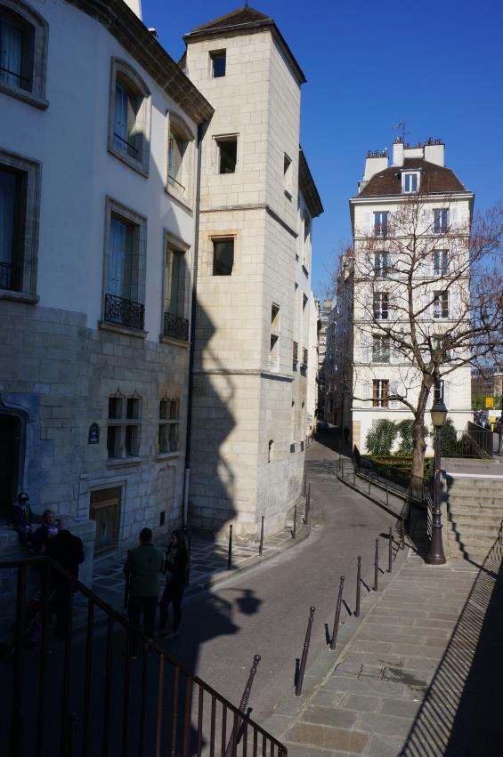
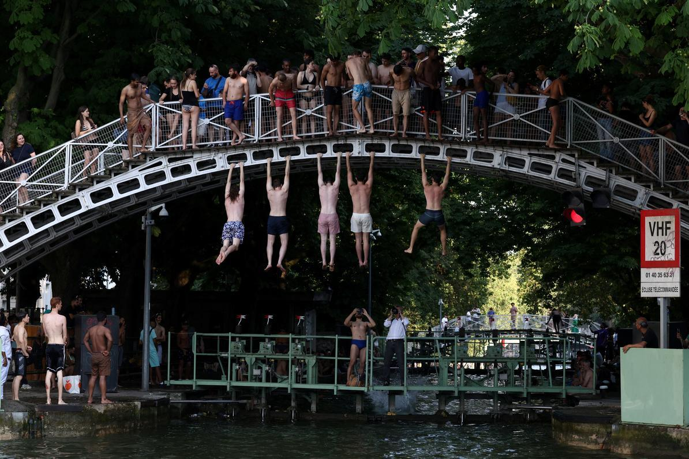

Les Grands Musées Parisiens
More tourists come to Paris and its environs than to any other city in the world – 50 million in 2025, including 18 million foreign tourists. More foreign tourists come from the United States than from any other country. The UK is a distant second. Then come Germany, Spain and China. Many tourists come to see the city’s myriad museums (a 2023 book is entitled 111 Museums in Paris That You Shouldn’t Miss). And many sought refuge in the museums during the recent canicule.
The top two sights in Paris are both churches (which are free): the rebuilt Cathédrale Notre-Dame de Paris and the Basilique de Sacré-Coeur, which each attracted 11 million visitors last year. But 18 of the 25 top sights last year were museums, starting with the world’s biggest and most visited museum, the Louvre, which welcomed 9 million visitors last year. (The other big draws were, in order of popularity, the Eiffel Tower, the Arc de Triomphe, the Sainte-Chapelle, the Panthéon and the Conciergerie.)
In this year’s annual survey by Time Out magazine, Paris was ranked the best city in the world for museums. (The next best cities were Madrid, London, New York and Chicago.)
To pay homage to this important pillar of French culture, during the winters of 2024 and 2026 the Alliance Française chapters in Miami and Chicago hosted a total of 12 lectures dedicated to the great museums in and around Paris, starting with the first museums created during the French Revolution and continuing through today. After two introductory lectures that gave an overview of the museums created between 1793 and 1900, and between 1900 and today, the directors and curators of the following 10 iconic museums, organized in chronological order of their inauguration, told the stories of how their museums came to be, and how they have evolved until today:
- The Louvre, the first museum in Paris, created from the royal art collection that was confiscated during the Revolution, and now the largest art museum in the world.
- The Museum of the Château de Versailles, with its Museum of French History, which Louis-Philippe, the last king of France, opened in 1837, and its museum of the royal apartments that only started in 1892 and continues to expand to this day.
- The Cluny Museum, which first opened in 1843 to display Alexandre Du Sommerard’s exceptional collection of medieval and Renaissance objets d’art.
- The Carnavalet Museum, which was inaugurated in 1882 in the 16th century Hôtel Carnavalet in the Marais to tell the history of the city of Paris.
- The Condé Museum in the Château de Chantilly north of Paris, which opened in 1898 to display the Duc d’Aumale’s extraordinary collection of books, paintings, and decorative art objects.
- The Museum of Decorative Arts, inspired by the Industrial Revolution and the World’s Fairs hosted by Paris, which was first conceived in 1882 to promote the applied arts and moved into its current location in the Marsan Pavilion and Wing of the Louvre in 1904.
- The Camondo Museum, which houses Moïse de Camondo’s collection of French decorative art from the second half of the 18th century, which opened as a “house museum” in 1936.
- The Centre Pompidou, the first “presidential museum”, which opened in 1977 in the iconic building designed by Renzo Piano and Richard Rogers.
- The Fondation Cartier of Contemporary Art, which opened in 1984 as the first major art museum in France created by a private foundation and moved into spectacular new premises on the Place du Palais Royal in October 2025.
- The still-under-construction Museum of the Great Century (the 17th century of Louis XIV and other Bourbon kings), which is scheduled to open in Saint-Cloud, just west of Paris, in 2028.
All of these lectures can now be seen free of charge on the YouTube channels of both the Alliance Française Miami Metro and the Alliance Française de Chicago:
“The Great Museums of Paris – From The Revolution Until 1900”
https://www.youtube.com/playlist?list=PLkCR2xj263mzv2nxk3Wlhkw6Q31irpZBn
“The Great Museums of Paris – From 1900 Until Today”
https://www.youtube.com/playlist?list=PLYs8VM6gdDwU
Les Expositions
By far the most rewarding part of organizing the above series about “The Great Museums of Paris” has been getting to know the speakers who gave the lectures. Without exception, they were all passionate about their subjects and delightful to work with.
The following exhibitions currently underway in and around Paris – organized in chronological order of their end-dates – have all been curated by directors and curators who have given lectures about their museums for the Alliance Française in the above two series and/or in the 2021 series about “The Great Châteaux of the Loire Valley and Île de France”:
“A Day in the 18th Century – Story of an Hôtel Particulier” at the Museum of Decorative Arts until July 5 (better hurry!):
https://madparis.fr/Une-journee-au-XVIIIe-siecle-chronique-d-un-hotel-particulier
This exhibition was curated by Ariane Sarazin-James and Sophie Motsch. Sophie kindly gave lectures about the history of the Museum of Decorative Arts in 2024 and the Camondo Museum in 2026.
“Sèvres, A Rothschild Passion – From the Villa Ephrussi to Paris” at the Mobilier National until July 26:
mobiliernational.culture.gouv.fr — Sèvres, Une Passion Rothschild
This exhibit was curated by Oriane Beaufils, who kindly gave a lecture about the Château de Fontainebleau for the Alliance Française in 2021 before she was appointed Director of Collections at the Villa Ephrussi in Saint-Jean-Cap-Ferrat in 2024.
“General Exhibition” at the Fondation Cartier until August 23:
fondationcartier.com — Exposition Générale
This exhibition displays a selection of contemporary art works commissioned by the Fondation Cartier from a wide variety of artists since its founding 40 years ago. (The total collection includes more than 4,500 works created by 500 artists from 60 countries.) The exhibition was curated by Béatrice Grenier, who gave the lecture about the Fondation Cartier last winter.
“From Naples to Chantilly: The Collection of the Queen Caroline Murat” at the Musée Condé in the Château de Chantilly until October 4:
chateaudechantilly.fr — Exhibition Chantilly Murat
This exhibition of art from the collection of Queen Caroline Murat, younger sister of Napoléon I and wife of Joachim Murat, who fought alongside Napoléon for his entire career and was King of Naples between 1808 and 1814, was curated by the director of the Condé Museum, Mathieu Deldicque, who gave a lecture about the Château de Chantilly in 2021 and another lecture about the Condé Museum in 2024. In the current exhibition he was ably assisted by Ulysse Jardat, who gave the lecture about the Musée Carnavalet in 2024 before he moved to the Musée Condé in 2025.
I look forward to following the careers of these dedicated professionals, and of the speakers in our other History & Heritage series who have so generously given their time and expertise to advance the Alliance Française’s mission to promote French culture.
* * *
I would like to mention one more exhibition: the blockbuster “Matisse. 1941-1954” exhibition at the Grand Palais until July 25:
https://www.grandpalais.fr/en/program/matisse-1941-1954
Like his near contemporary Pablo Picasso (1881-1973), Henri Matisse (1869-1954) lived a long life during which he continuously reinvented himself. This exhibition displays 300 of the Matisse’s works during the last 13 years of his life, culminating with his famous series of four Nus Bleus (Blue Nudes), collages created from gouache (painted paper) cut-outs in 1952, two years before his death at age 84.

The exhibition concluded with the following quotation from Matisse about his Nus Bleus:
Il n’y a pas de rupture entre mes anciens tableaux et mes découpages, seulement, avec plus d’absolu, plus d’abstraction, j’ai atteint une forme décantée jusqu’à l’essentiel.
There is no separation between my old pictures and my cut-outs, except that with greater completeness and abstraction, I have attained a form filtered to its essentials.
The same applies to youth and old age, n’est-ce pas ?
The Matisse exhibition is a co-production of the Grand Palais Réunion des Musées Nationaux and the Centre Pompidou, where most of the works on display come from. As explained in the Zoom lecture mentioned above, the Centre Pompidou closed for renovations last September and will not reopen until 2030. In the interim, it will hold exhibitions at other venues, including in particular the Grand Palais.
The Matisse exhibition was a nostalgia trip for me because the first Matisse retrospective to be held at the Grand Palais opened in April 1970, when yours truly was a student in Paris. I took an art course with an American sculptor from Kansas whose name escapes me. He took his class of American college students around to a different museum or art gallery every week – a much better way to discover art than a slide show in a windowless classroom. After visiting the exhibition at the Grand Palais, I wrote my term paper for his course about Matisse. Believe it or not, I found it in a closet. Here is the cover page:

Do the figures represent birds? flowers? pairs of legs of Nus Blancs? You decide.
This was my first – and last – work of art, so consider this to be my retrospective.
Les Spectacles
For information about all types of cultural goings-on in Paris, consult l’Officiel des Spectacles, which was first published in 1946 and is available both in a paper version that comes out every Wednesday (when all new films open in cinemas) or online: https://www.offi.fr/

Along with 270 exhibitions, the online issue of l’Officiel des Spectacles on July 1 lists the following spectacles in Paris and the surrounding Île de France:
- 787 films
- 1,166 spectacles, including 553 plays
- 2,048 concerts
- 217 activities for children
- 141 guided tours
Samuel Johnson memorably said “he who is tired of London is tired of life”. The same could be said of Paris (except perhaps during a canicule).
Avant et Après
Surely the greatest spectacle in Paris is the city itself, which has never stopped changing over its 2,000-year history.
Walking through the streets of Paris is always an adventure, with surprises around every corner. And thanks to photographers like Eugène Atget (1857-1927), among many others, we can see just how much the city has changed since Baron Haussmann hired Charles Marville (1813-1879) to photograph the streets of Paris before and after his Grands Travaux to modernize the city between 1853 and 1870.
Near where we live on the Île de la Cité, the oldest part of Paris, is a wonderful-looking building on the corner of the very narrow Rue des Chantres and Rue des Ursins, overlooking the Quai aux Fleurs, the Seine, and the Hôtel de Ville on the Right Bank. Parts of the building appear to date from the Middle Ages, but it turns out that the house is in fact a medieval pastiche built between 1957 and 1960.


Rue des Ursins seen from the Quai aux Fleurs in 1902 (photo by Atget) and today.


Looking down Rue des Ursins in 1901 (photo by Atget) and today.
Le Bac Philo
In some towns in France the baccalaureate exam (“le bac”) that all high school seniors have to take in June and pass before they can apply to university was rescheduled because of the heatwave.
A piece in The New York Times last month pointed out that all high school students in France have to take a philosophy course in their final year of lycée, where they reflect on concepts such as science, reason, nature, language, existence, the unconscious, happiness, duty, freedom, justice, the State, truth, work, religion and art. Philosophy is generally considered to be the most difficult course in the lycée’s curriculum – and taking the philosophy portion of the baccalaureate exam (le bac philo) a national rite of passage.
In this year’s bac général (there is a separate bac technologique for students pursuing a vocational education), students had four hours to explain a passage from Friedrich Nietzsche’s book Human, All Too Human (1878) and to answer the following questions:
- Do we have control of our words?
- Can one be happy when others are not?
Next time there is a lull in the dinner conversation, you might float one of the above.
La Baignade
Another way to keep cool in Paris is to go for a refreshing dip in the Canal Saint-Martin (photo below), or at one of three designated spots on the Seine open for swimming between July 4 and the end of August.

Another canicule is forecast for next week.
Time to break out my Speedo!
Russell